STARTUP H
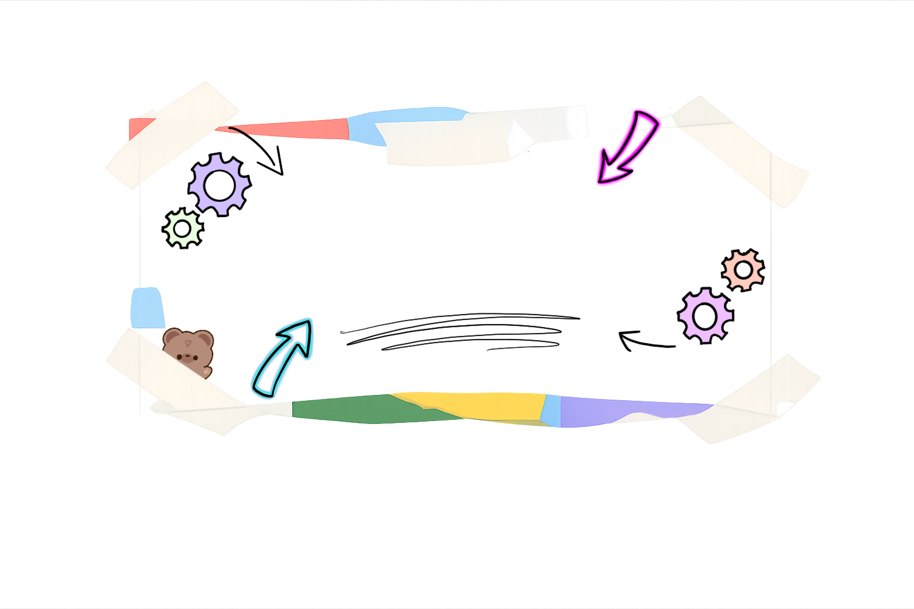
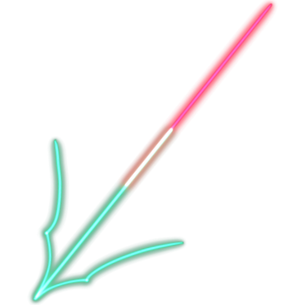
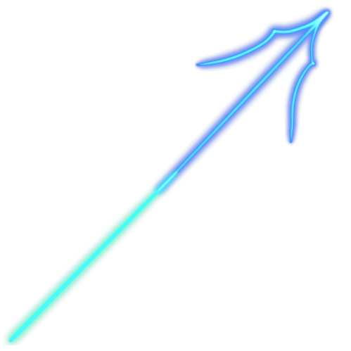
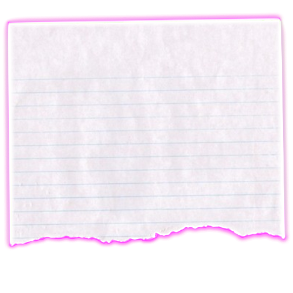
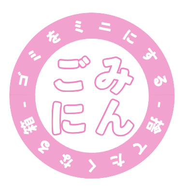
海外滞在中、街中に多数のゴミ箱が配置されていることから、廃棄物処理のスムーズさを実感した。一方、日本では公共空間にゴミ箱が少なく、不便さが際立つ。その背景には、地下鉄サリン事件以降の安全対策や維持管理コストといった複数の要因がある。しかし、ゴミ箱不足はポイ捨ての増加や家庭ごみの持ち込みなどの問題を招き、景観悪化や処理費用の増大、環境負荷の深刻化をもたらしている。 これらに対し、単にゴミ箱を増設するだけでは不十分であり、ポイ捨てを生む「誰かが片付けるだろう」といった意識の問題に踏み込む必要がある。そこで本プロジェクトでは、利用者の意識変容を促す「ごみにん」の開発を目指す。適切な分別や処理を自然に意識できる仕組みを備えたゴミ箱によって、利便性の向上にとどまらず、環境保全と持続可能で楽しい社会の実現に寄与したい。
Learn More
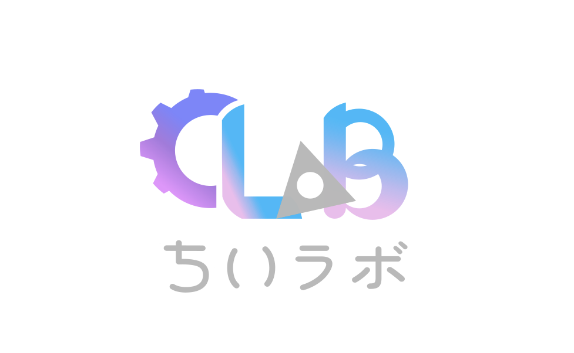
「高校生」と「地域の子供」によるちいさなロボット研究所。子どもたちが社会課題を解決するロボットを開発して、実際に街で社会実装を目指します。
Learn More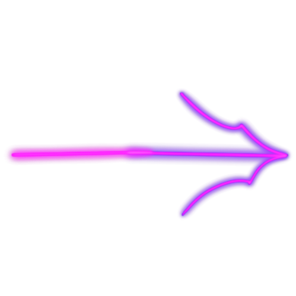
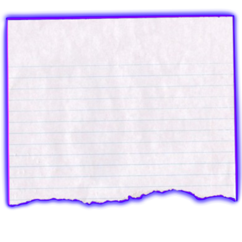
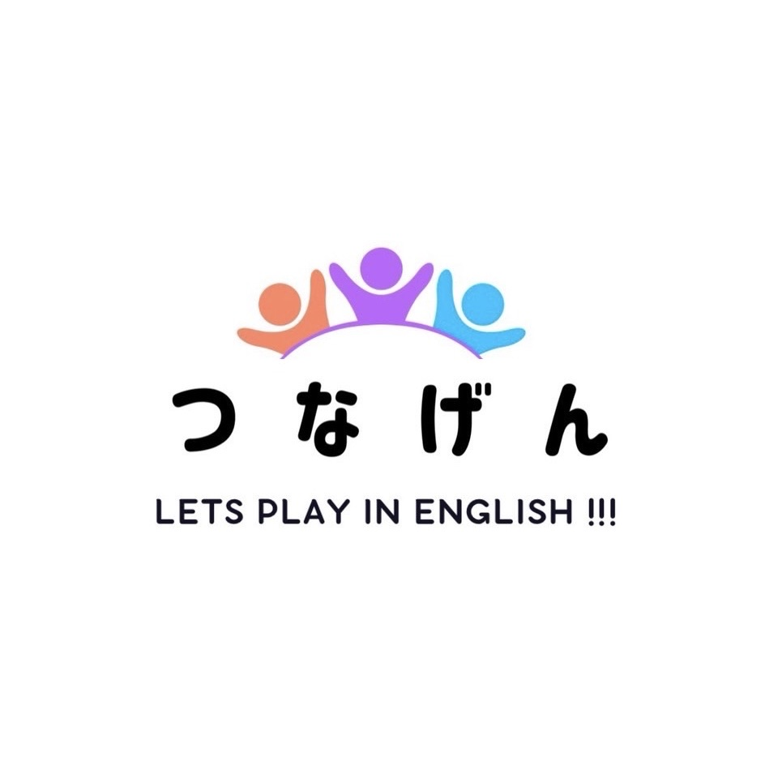
Tunagenは、持続可能な技術とバイオの力を活用し、次世代の社会基盤を構築することを目指すプロジェクトです。
Learn More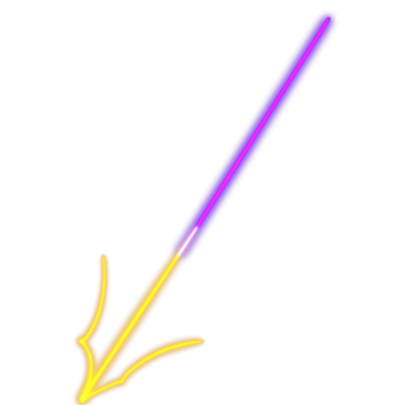
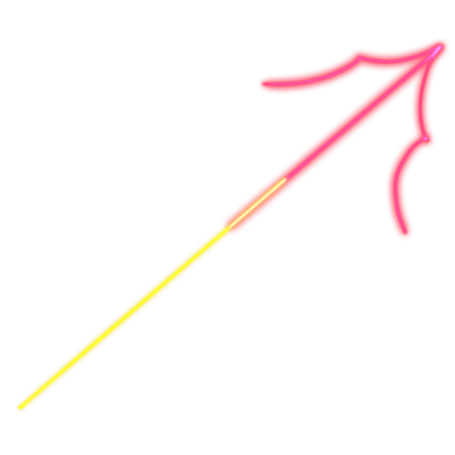
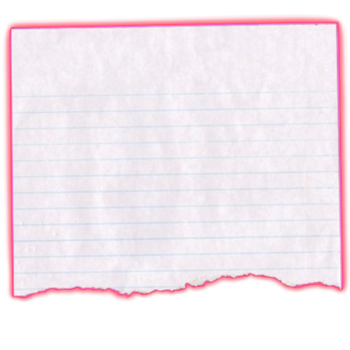
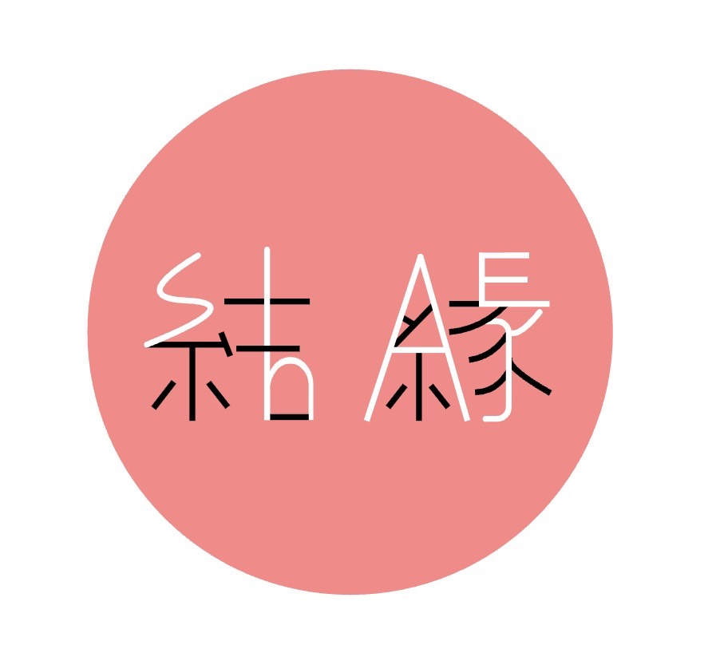
日本文化の理解を外国人・若者・日本人に深めてもらうために、地域の企業と協力し、日本の伝統的な商品・サービスの提供を手助けすることを目的としたグループです。地域企業の認知度を高めつつ、地域活性化にも繋げています。港区内の神社境内やお祭りなどにて販売を行っています。こうした販売体験を通じて、起業家精神を醸成しながら対話力を身につけ、私たち自身も日本の歴史や文化についての理解を深めています。
Learn More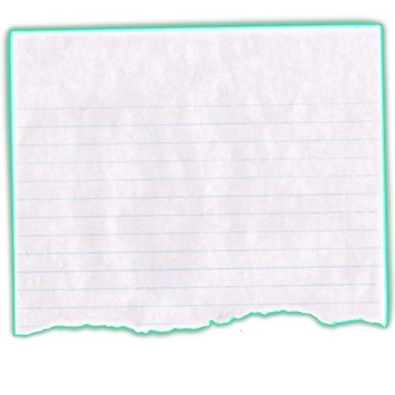

再凛は着物などの伝統的な品を使用してアクセサリーや小物を制作、外国人観光客向けに販売するグループです。使われなくなった伝統商品を普段使いできるものに変える事ができる上に、外国人観光客の方に本物の伝統的な品を使用したお土産を販売できる事に意義を感じています。さらに、日本の着物産業が衰退している点に着目し、利益の一部は着物産業の復興に寄付していく予定です。
Learn More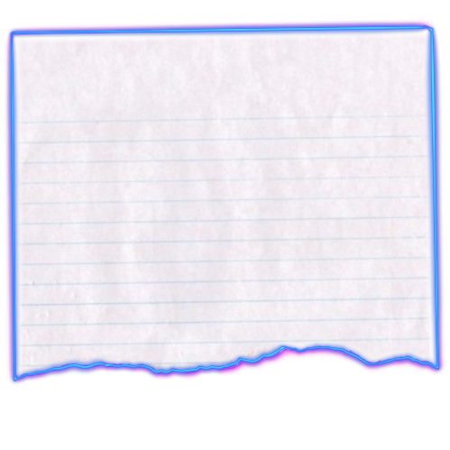
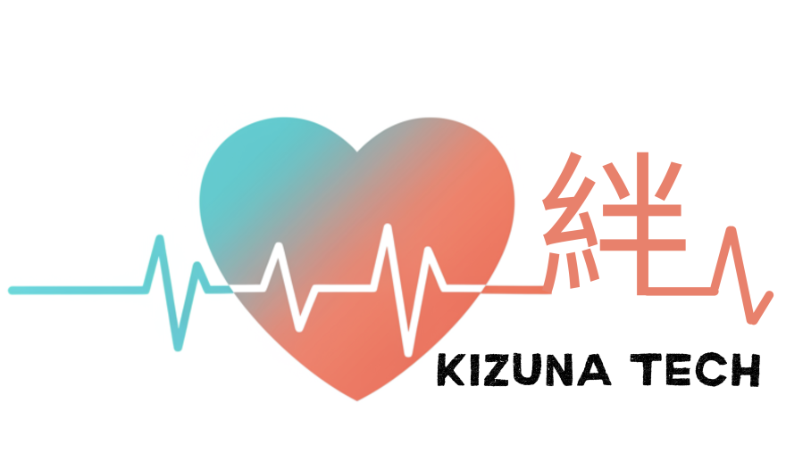
Kizuna Tech は、テクノロジーを通じて人と人のつながりを支える学生スタートアップです。 高齢者の孤独に寄り添うAIデバイス CareFriend（ケアフレンド） を開発し、家族と祖父母の距離をやさしく縮めることを目指しています。
Learn More